| PLEIN LA VUE |
| Mathieu ramène au Canada son
épouse. Sébastienne en a sûrement plein la vue, comme tout
nouvel arrivant, en découvrant ce nouveau monde qui semble sans commune mesure,
comparé à l'Europe taillée à une échelle humaine.
L'embouchure de la Seine a cinq
kilomètres de large, celle du Saint-Laurent en a une centaine.
Même après avoir remonté cinq cents kilomètres sur le fleuve
les rives s'éloignent encore de trente kilomètres, l'eau y est encore
salée. À Québec, le fleuve est encore large d'un kilomètre et
la marée se fait toujours sentir. Ici ce qu'on appelle rivières
sont en fait des fleuves dans la dimension européenne. On
qualifie de lac ce qui est en fait une mer intérieure. Il
y a d'immenses îles. La forêt est un interminable boisé
sauvage, il faut des guides pour s'y aventurer. 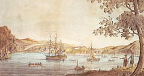 Les distances qui séparent les lieux de peuplement dépassent ce à quoi est habitué l'Européen. Quant aux maisons de campagne, si près l'une de l'autre en France, elles sont ici éloignées d'au moins un quart de kilomètre. Le colon français n'a plus ce milieu humain où la communauté resserrée peut donner un sentiment de sécurité. |
| LE SYSTÈME SEIGNEURIAL |
| Le régime seigneurial, qui
existe en France depuis le Moyen Âge, est mis en place dans la colonie
par la Compagnie des Cent-Associés en 1627. Il s'agit d'un système
de tenure qui règle la façon de détenir les terres et de les
concéder pour encourager le peuplement du pays. Le roi nomme
quelqu'un Seigneur, suite à une action de mérite ou la recommandation
des autorités en place. Ce dernier, devenu grand propriétaire
terrien, est incité à installer des habitants sur son domaine et
doit remplir certains devoirs envers eux pour conserver sa seigneurie.
Ce seigneur n'a pas le choix de développer sa seigneurie
pour en tirer profits car, un seigneur ne peut travailler, sinon comme
officier militaire ou dans les hautes sphères de l'administration
coloniale. Ce régime
définit également les relations sociales et économiques entre
seigneur et censitaires. Mais avant de concéder des
terres, il faut les diviser et le fleuve Saint-Laurent se présente
comme une séparation naturelle. Étant donné qu'il est la seule voie
de communication pour se rendre d'un bout à l'autre du pays, chacun
veut y avoir accès. Le territoire de la colonie est donc divisé en seigneuries,
donc en une série de bandes étroites, partant des rives du fleuve pour
s'enfoncer profondément à l'intérieur des terres. La vallée du
Saint-Laurent se découpe uniformément, selon une orientation
nord-ouest sud-est. |
|
|
Une seigneurie est à son tour redivisée de la même façon.
Elle est donc constituée d'un Non loin de là, se situe
habituellement la terre de la Fabrique où on construit une église
et un presbytère. D'ordinaire
le seigneur réserve un terrain pour que les habitants puissent y faire
paître leurs animaux, qu'on appelle la Commune. Ensuite, on
retrouve les terres concédées aux habitants, appelées rotures. Il ne
faut pas oublier que ces terres sont des concessions, ce qui veut dire
que le seigneur conserve sur elles son droit de propriété. 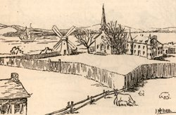 Théoriquement, le seigneur
doit concéder une terre à tous les habitants qui en font la demande et
construire sur son fief un moulin à blé. En pratique, celui-ci
n'est élevé que lorsqu'il y a suffisamment de monde pour en assurer la
rentabilité. Le censitaire va alors y moudre son grain et paie un droit
de mouture. Le seigneur qui concède une terre s'attend à recevoir des
droits onéreux comme un loyer annuel (les cens et les rentes) et
la "taxe" (les lods et ventes) si l'habitant vend sa
terre. Il détient aussi un droit de corvée qui lui permet de réclamer
des journées de travail à son censitaire. On estime que le censitaire
donne à son seigneur environ 65 livres par année, ce qui représente
une somme importante quand on sait qu'un journalier pouvait gagner entre
120 et 200 livres par année et un ouvrier spécialisé autour de 300 à
400 livres. Le seigneur bénéficie en plus d'un certain nombre de droits
honorifiques, comme ceux d'occuper un banc bien situé à l'église,
de recevoir le premier la communion et le pain bénit. Si dans les premiers temps, le régime seigneurial fournit des conditions d'entraide qui favorisent le développement de la colonie, il devient peu à peu un obstacle au progrès général du pays. L'habitant est complètement dépendant du seigneur. Il est obligé de lui payer une rente et sa terre est soumise à son contrôle s'il veut la vendre. Le régime seigneurial n'est aboli qu'en 1854, ce qui brime pendant un certain temps l'évolution économique de la colonie, puisqu'il entrave la mobilité foncière et le développement du capitalisme. |
| LA SEIGNEURIE NOTRE-DAME-DES-ANGES |
|
Pendant son contrat de service l'engagé a tout le loisir d'examiner en quel endroit il décidera de se fixer par l'obtention d'une terre. Dans la seigneurie où il s'établit le titulaire du fief lui concède une terre, d'abord sur une simple promesse, écrite ou verbale. L'acte formel de concession suivra lorsque le seigneur aura un notaire disponible. Mathieu Choret, revenu de France en 1647 avec sa nouvelle épouse, a un contrat d'un an comme engagé avec les Jésuites. Quand vient le temps pour lui de s'installer sur une terre, il reste fidèle aux Jésuites et choisit leur Seigneurie de Notre-Dame-des-Anges. Cette seigneurie est au nord de la rivière Saint-Charles et s'étend vers l'est jusqu'à la seigneurie de Robert Giffard (Beauport). Les terres près de Québec étant toutes occupées, les Jésuites lui concèdent une terre à l'extrémité est de leur Seigneurie, près de leur ferme. Le contrat est passé en mars 1649 et on peut y lire: "trois arpents de terre de front sur le Grand Fleuve de Saint Laurent de la Nouvelle France et de quatre lieues de profondeur dans le bois, ..." Le ruisseau du Moulin fait un droit sur une partie de la terre de Mathieu. 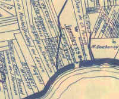 Entretemps, le 17 août
1663, Charles de Lauzon concède à Mathieu
Choret une terre dans sa seigneurie de l'île d'Orléans.
Mathieu ne peut en profiter longtemps car il décède le 27 mars
1664. Au recensement de 1667, on trouve son fils aîné Robert
à l'île d'Orléans
sur une terre de deux arpents, sans doute celle de son père. |
| AU TRAVAIL |
| Le premier travail d'installation est un défrichement d'une dureté particulière:abattre le bois debout, arracher les souches petites et moyennes, brûler les branchages, épierrer le terrain. Travail lent: on a calculé qu'à un colon qui est seul, il faut un an pour défricher et rendre propre à la culture une superficie d'un arpent et demi (un demi-hectare), et encore cette culture se fait-elle pendant un certain temps parmi les grosses souches qu'il n'a pas pu enlever et qu'il faut laisser pourrir. |
| LA MAISON DE LA PREMIÈRE GÉNÉRATION |
| Mathieu et Sébastienne ont besoin d'une habitation. En
attendant d'en avoir le temps et les moyens, ils se construisent tout de
suite une maison qui n'est alors qu'un abri temporaire: une cabane faite
de billots à peine équarris à la hache et recouverte de chaume, sans
divisions à l'intérieur et avec, comme seule ouverture, la
porte.
C'est probablement dans ce genre de maison que Sébastienne mit au monde ses premiers enfants, Robert en 1648 et Joseph en 1650. |
| Les relations des Jésuites (Vol.
36, p.114) rapportent que le 12 mars 1651 "la maison de Mathieu
Choret brûla lorsque lui et sa femme étaient à la messe à
Beauport". Heureusement personne n'est blessé. Le couple
doit se rebâtir une maison, celle-ci est sûrement plus grande maintenant qu'ils sont au Canada depuis quatre ans et ont deux enfants.
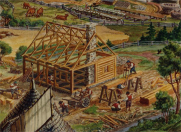 Les
premières maisons de la Nouvelle-France Un
grand nombre d'immigrants qui débarquent en Nouvelle-France viennent du
Perche, petite région située au sud de la Basse Normandie. Ils arrivent
avec leur savoir-faire et construisent des maisons semblables à celles de
leur pays : plan rectangulaire, cheminées posées dans les pignons,
pentes du toit inclinées selon un angle de 45° à 55°, asymétrie des
ouvertures et ainsi de suite. De cette manière, ils influencent fortement
l'architecture de la colonie. Les premières
habitations sont pour la plupart bâties en bois. Ce matériau résiste
bien au froid, mais représente un constant danger d'incendie. Mathieu,
en 1651, reconstruit sa maison sûrement en bois, mais les générations
suivantes espèrent parer au feu en construisant des maisons de
pierre comme celles que l'on retrouve en France. Ce type d'habitations
ne convient cependant pas au climat local : la pierre est conductrice du
froid et dès les premiers gels, le mortier qui la soude s'effrite. De
plus, la demeure repose directement sur le sol et s'ébranle lors du dégel
printanier. Afin de remédier à
ce problème, on met au point un nouveau mortier, pouvant résister autant
au froid qu'à la chaleur. On édifie également un soubassement de
pierre, plus large que la superficie de la bâtisse, appelé solage.
Deux opérations sont ensuite nécessaires pour se protéger des hivers
rigoureux : le renchaussage
qui consiste à entourer le solage de paille et de terre et le gasparde,
soit le revêtement des murs intérieurs avec un crépis
à base de glaise. Ces premières
demeures sont petites et, par conséquent, plus
faciles à chauffer. Elles ont habituellement six mètres sur huit.
La profondeur est habituellement déterminée par la portée des poutres.
Lorsque la famille s'agrandit, on ajoute une rallonge à l'une des extrémités.
Les maisons
comportent toutes un grenier auquel on accède par une échelle ou
un petit escalier 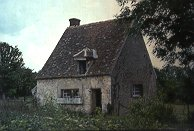 L'intérieur des maisons se résume souvent à une seule pièce qui sert à la fois de cuisine, de salle de séjour et de chambre à coucher. Il y a toujours une large cheminée avec un foyer de pierres plates au-dessous duquel on retrouve la batterie de cuisine. Le mobilier, quant à lui, est très simple. Il comporte une table, cinq ou six chaises, quelques coffres, une huche à pain et un lit "cabane" fermé de portes ou de rideaux. Ainsi toute la famille vit-elle dans cette unique pièce où on dort, on mange, on travaille et on s'amuse. |
| L'ÉQUIPEMENT DE LA FERME |
 Aux débuts il n'y a pas de
granges
partout, et elles sont très petites, environ 44 pieds sur 22. Ce
qui étonne dans les fermes c'est que, dans un pays à hiver rigoureux,
on adopte dès le 17ème siècle l'habitat dispersé plutôt que la
ferme-bloc en usage en France. Une ferme-bloc, avec sa cour intérieure
mieux protégée contre les vents, facilite la communication d'une
pièce à une autre. A-t-on voulu diminuer le risque que le feu se
propage à tous les éléments de la ferme? Toujours est-il, que
malgré la variété dans les origines des colons, dès les
débuts, la première génération adopte l'habitat dispersé, et,
malgré les problèmes qu'il pose, c'est l'habitat qu'ont retenu les
générations suivantes. Aux débuts il n'y a pas de
granges
partout, et elles sont très petites, environ 44 pieds sur 22. Ce
qui étonne dans les fermes c'est que, dans un pays à hiver rigoureux,
on adopte dès le 17ème siècle l'habitat dispersé plutôt que la
ferme-bloc en usage en France. Une ferme-bloc, avec sa cour intérieure
mieux protégée contre les vents, facilite la communication d'une
pièce à une autre. A-t-on voulu diminuer le risque que le feu se
propage à tous les éléments de la ferme? Toujours est-il, que
malgré la variété dans les origines des colons, dès les
débuts, la première génération adopte l'habitat dispersé, et,
malgré les problèmes qu'il pose, c'est l'habitat qu'ont retenu les
générations suivantes.
Le colon possède les outils
traditionnels: la charrette à deux roues, la charrue à rouelles.
Le cheptel est minime: un boeuf qui sert de bête de trait, une vache à
lait, des cochons et des volailles. Les moutons sont rares puisque
la fourrure qu'on trouve aisément sur place remplace la laine. Le
cheval n'arrive qu'en 1665 et n'est pas tout de suite le lot des
"petites gens". 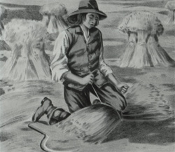 Le colon cultive surtout le blé froment, mais aussi l'orge, l'avoine, le seigle, les pois et même ce blé d'Inde amérindien. Il sème des herbes potagères: salades, raves, carottes, betteraves, navets, choux et la citrouille, cette autre plante amérindienne. Mathieu et Sébastienne font une agriculture de survivance: pour la famille et un petit surplus à vendre pour acheter les biens qu'ils ne peuvent produire. Le couple est à la base même de la vie sur une ferme. Ils travaillent ensemble tous les deux, la femme aussi fort que l'homme, même enceinte. Les trois quarts de l'année ils triment sans arrêt du lever au coucher du soleil. |
| L'HABILLEMENT DU COLON |
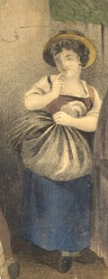 L'immigrant des premières années de la colonie s'habille comme en France, tout en ayant soin de s'adapter de plus en plus aux nouvelles conditions du pays. Aux pieds il peut se mettre des souliers "français", avec talons, qui sont fabriqués en France et qu'il protège par des mules (comme nos couvre-chaussures) ou des souliers "sauvages", sans talons, adaptées de la chaussure amérindienne.Pour le travail, il utilise des sabots de bois. Les vêtements sont rudimentaires, dont des chemises de grosses toiles de lin jusqu'à mi-cuisse pour ne pas gêner les mouvements dans le travail, par exemple durant le fauchage. Si on portait aujourd'hui durant une demi-heure une telle chemise si rugueuse, on aurait la peau irritée. La femme porte toujours une coiffe. La première génération de colons s'habille avec du matériel d'importation. Mais nous remarquons chez eux des additions dues à l'influence amérindienne: mitaines et manchons de castor, bonnet fourré de peau d'ours, haut-de-chausse en peau d'orignal, souliers "sauvages". |
| LE CONTRAT DE CONCESSION D'UNE TERRE À MATHIEU |
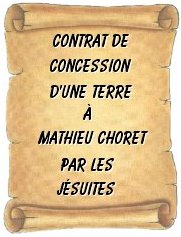 Si vous cliquez sur le parchemin vous pourrez lire le contrat de la concession d'une terre par les Pères Jésuites à Mathieu Choret passé devant le notaire Claude Berman à Québec le 6 mars 1649.Quelques faits à retirer de la lecture de ce contrat:
|
| DEUX SEIGNEURS COMME TÉMOINS DU CONTRAT DE MATHIEU |
|
JEAN JUCHEREAU La colonisation de la vallée du Saint-Laurent débute vraiment après la prise de Québec par les frères Kirke et le retour de la colonie dans le giron de la France, en 1632. Champlain ayant eu la sagesse de donner à certains pionniers de vastes terres, il les incite à jouer le rôle de recruteurs. Premiers Seigneurs en titre, les frères Noël et Jean Juchereau, ainsi que Robert Giffard, sont originaires du Perche. Dès 1634, ils recrutent les premiers d’une centaine d’engagés et de colons dont quelques-uns les suivent avec leur famille. Jean Juchereau est donc un seigneur comme Robert Giffard. Il a la Seigneurie de Maur (située environ à Cap-Rouge et St-Augustin). Il est venu au Canada avec trois de ses frères, sa femme et quatre de ses enfants. Un de ses fils épousera la fille de Robert Giffard, de telle sorte que des Juchereau seront à la tête de la Seigneurie de Beauport jusqu'à la fin du système seigneurial. Ils auront aussi les seigneuries de Fossambault, Gaudarville, St-Roch des Aulnaies, St-Denys. NICOLAS MARSOLET Lors de la signature de ce contrat, en 1649, Nicolas Marsolet a la Seigneurie de Bellechasse et est un bon père de famille. Mais sa vie passée a été ce qu'on appellerait aujourd'hui "rock'n roll". En effet Nicolas Marsolet a été un TRUCHEMENT. Un quoi? Vous allez comprendre: 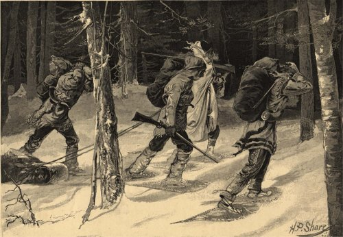 Nicolas Marsolet naît dans les environs de Rouen vers 1600 ou un peu avant. Il arrive en Nouvelle-France aux alentours de 1613. Champlain veut en faire un truchement et l'envoie aussitôt vivre avec les Algonquins et les Montagnais. Les Français ont un grand besoin de communiquer avec les amérindiens pour explorer le pays et faire la traite de fourrures. Le truc qu'ils ont trouvé est d'envoyer quelques très jeunes garçons vivre quelques années chez les Amérindiens pour qu'ils en apprennent leurs langues et coutumes, et qu'ils puissent ensuite servir d'interprètes. Nicolas partage alors son temps
entre les postes de traite de Tadoussac, de Québec, de 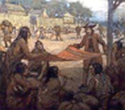 En 1629, lors de la prise de Québec par les frères Kirke, Nicolas Marsolet ne retourne pas en France. Il reste dans la colonie et travaille pour le compte des Anglais au grand désarroi de Champlain qui le qualifie de traître. Nicolas Marsolet se considère davantage Amérindien que Français. Il est un ardent défenseur des nations autochtones. Pendant plus de dix ans, il
refuse d'enseigner les langues indigènes aux missionnaires, 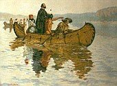 Il est vraisemblable que Nicolas Marsolet, comme la plupart des truchements, ait épousé la fille d'un chef autochtone. Il est très prestigieux pour un chef d'être en contact avec les Français et il leur offre spontanément la main de leur fille. Selon la tradition, un homme peut avoir plusieurs femmes dans le village. Ces coutumes exaspèrent les Jésuites qui condamnent les truchements pour leur vie de péchés. Peu nombreux, ivres de liberté, les truchements sont des précurseurs. Toujours présents dans les négociations commerciales, ils permettent un rapprochement avec les communautés autochtones et des alliances favorisant la traite des fourrures et la colonisation du pays. C'est une nouvelle race d'homme qui s'est forgé une identité propre, ni française, ni amérindienne. En 1636 ou 1637, Nicolas Marsolet retourne en France chercher l'héritage de ses parents. Il profite de son séjour pour épouser Marie Le Barbier et revient avec elle dans la colonie. Le 6 octobre 1637, il prend possession de la seigneurie de Bellechasse que la compagnie des Cent-Associés lui a concédée et fonde une famille. Dès lors, il devient un bon père de famille de dix enfants et un précieux collaborateur des missionnaires. |
| FAMILLE DE MATHIEU ET SÉBASTIENNE |
|
Le 7 juin 1648, le père Paul
Lejeune baptise le premier fils de Mathieu et Sébastienne, Robert,
né à Beauport. Il porte le prénom de son parrain Robert Hache,
le même compagnon de Mathieu qui a traversé l'atlantique avec lui, et
qui a été témoin à son mariage. Hache travaille comme commis
au magasin des Jésuites à Québec.
Le fait que le premier enfant de Mathieu soit né à Beauport nous confirme
qu'il est probablement
déjà sur sa terre, même si le contrat de concession n'est pas encore
passé.
Le 14 août 1650 c’est la naissance de Joseph, ondoyé à Beauport par Robert Giffard, le Seigneur de Beauport. Le 8 septembre suivant l’enfant est tenu sur les fonts baptismaux par ce même Robert Giffard. En 1652, le 11 décembre, on assiste à la naissance de Jeanne, baptisée le 12 janvier suivant. Trois ans plus tard, des jumeaux viennent grossir la famille. Nés le 17 janvier 1655, ils sont baptisés à des dates différentes. L’acte de baptême raconte que les deux enfants ont été ondoyés le lendemain, l’un par le père François Le Mercier et l’autre, par le père Pierre Chastellain, en attendant le baptême. Jérôme Lalemant écrit : « l’un des deux enfants fut apporté à cette paroisse (Notre-Dame de Québec) au mois de mars et les cérémonies lui furent supplées par moi et le nom de Pierre lui fut donné et l’autre y fut apporté le 27 août ». Ce deuxième enfant, baptisé par le père Joseph Poncet, reçoit le nom d’Ignace. Au mois de novembre 1657, Jean vient au monde. C'est lui que l'on retrouve comme ayant une terre à l'île d'Orléans en 1709, selon le plan de Gédéon Catalogne. Il est suivi, en 1662, par Pierre connu sous le nom de Pierre le Cadet. |
| SUR L'EMPLACEMENT ACTUEL DE LA TERRE DE MATHIEU, DES CROIX BLANCHES ET DES MARTYRS |
|
Nous avons vu que la terre de Mathieu se trouvait à peu près là où on retrouve aujourd'hui l'église de Giffard. Cette paroisse date de 1914, suite à son détachement de celle de Beauport. Lorsqu'en 1919 Joseph-Arthur Gauthier devient curé de Giffard la paroisse est une création nouvelle. Tout y est à construire, et le curé Gauthier y sera en poste jusqu'en 1956. Il fait lui-même les plans du cimetière, l'oeuvre d'un curé-paysagiste. 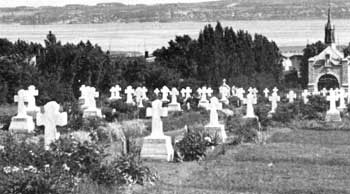 De longs alignements de croix blanches, toutes identiques, donnent au cimetière de Giffard un aspect monastique et en font un cimetière paroissial qui n'est pas comme les autres. Il est situé sur un haut plateau, et la percée du long et étroit parc des Martyrs permet d'apercevoir le fleuve, au loin.La paroisse est dédiée à Saint-Ignace de Loyola, le fondateur des Jésuites, propriétaires de 1626 à 1800, de la seigneurie Notre-Dame-des-Anges dans laquelle se trouve Giffard. En 1927, les prêtres du Séminaire, qui ont acquis le "domaine des Jésuites" en 1863 et en ont fait leur ferme Saint-Ignace, donnent à la paroisse le terrain du cimetière. Touché par la mort de sa soeur Rose-Anna, franciscaine dans un couvent à Assise, le curé Gauthier, impressionné par la vie en monastère et naturellement épris des choses bien ordonnées, décide que toutes les pierres tombales de son nouveau cimetière seront pareilles et bien alignées. Les noms de l'avenue du Sanctuaire et du parc des Martyrs rappellent l'objectif du curé de faire de Giffard un lieu de pèlerinage consacré aux Martyrs jésuites de la Nouvelle-France qui venaient d'être béatifiés en 1925; il était frustré de voir un flot continuel de pèlerins se rendre à Sainte-Anne-de-Beaupré et traverser sa paroisse sans s'y arrêter. Près du cimetière, on peut encore voir la
belle chapelle des Martyrs érigée en 1927 selon les plans de Gérard
Morisset. Ce sanctuaire du curé Gauthier ne connaîtra pas le succès
escompté, mais son cimetière et son parc des Martyrs constituent
encore aujourd'hui un îlot de verdure et de paix. |
 ensemble de bandes étroites,
perpendiculaires au fleuve. La partie la plus importante est bien sûr
le domaine personnel du seigneur. Ci-contre le manoir
de Robert Giffard dans sa seigneurie de Beauport.
ensemble de bandes étroites,
perpendiculaires au fleuve. La partie la plus importante est bien sûr
le domaine personnel du seigneur. Ci-contre le manoir
de Robert Giffard dans sa seigneurie de Beauport.  Deux hommes importants
dans la colonie signent comme témoins au bas du contrat de concession
d'une terre à Mathieu: Jean Juchereau et Nicolas Marsolet.
Deux hommes importants
dans la colonie signent comme témoins au bas du contrat de concession
d'une terre à Mathieu: Jean Juchereau et Nicolas Marsolet.